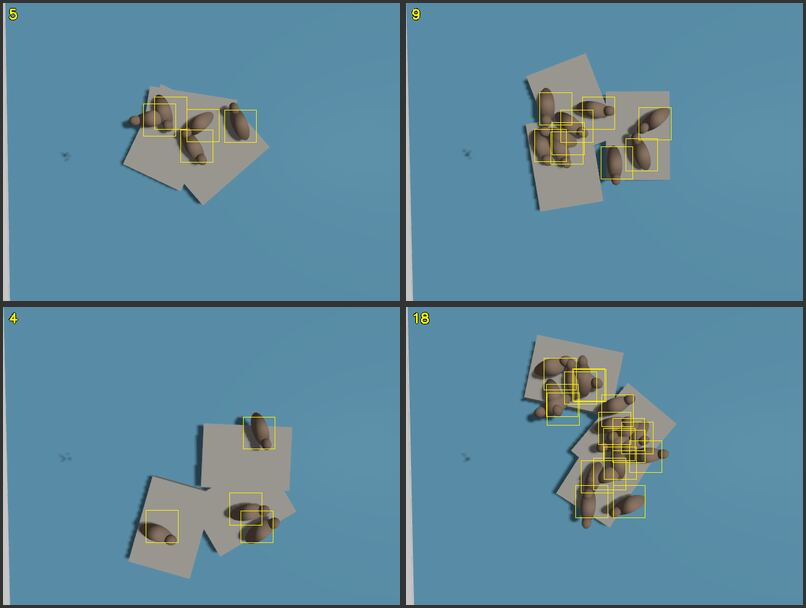
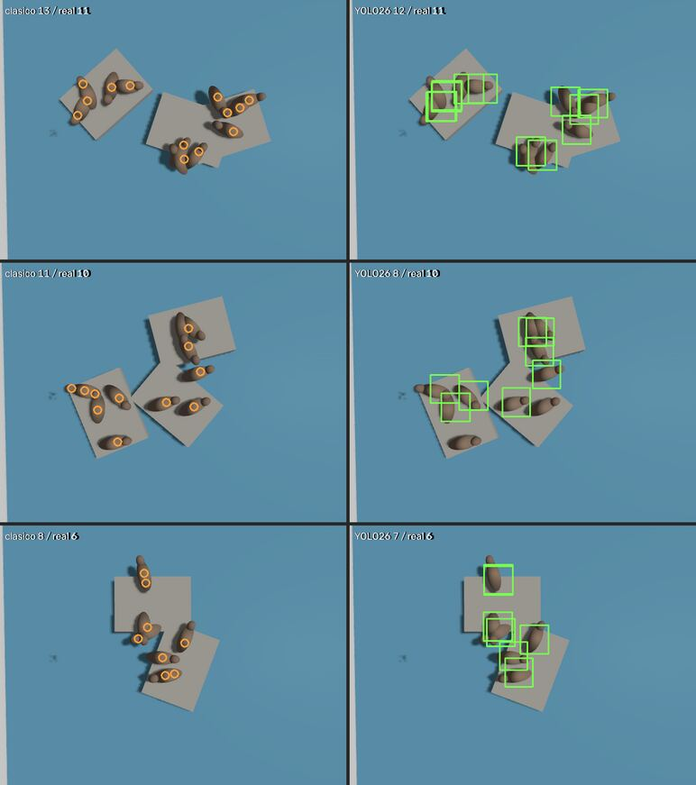
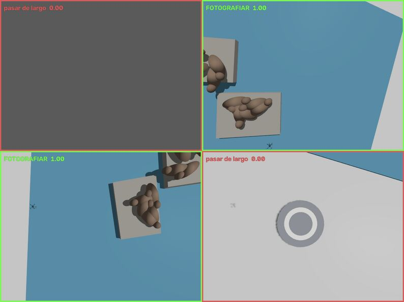
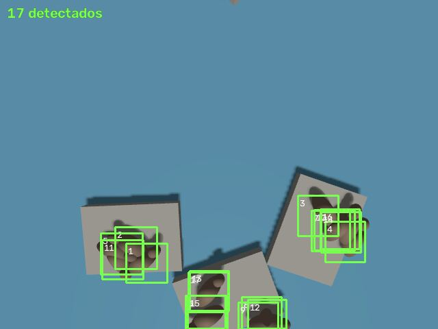
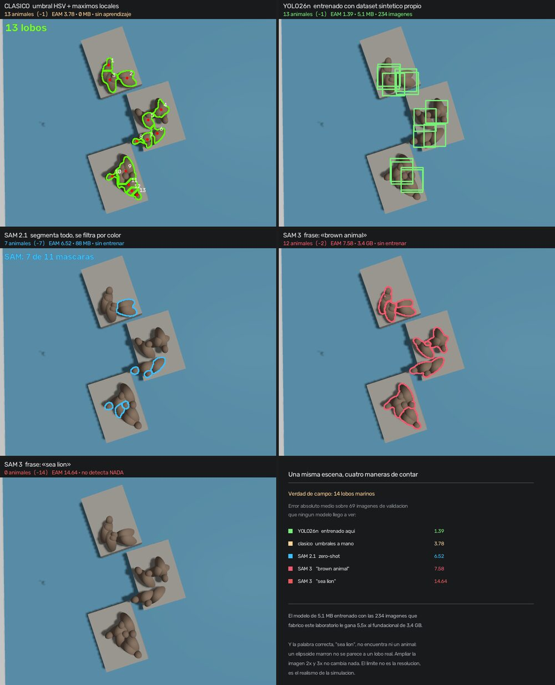
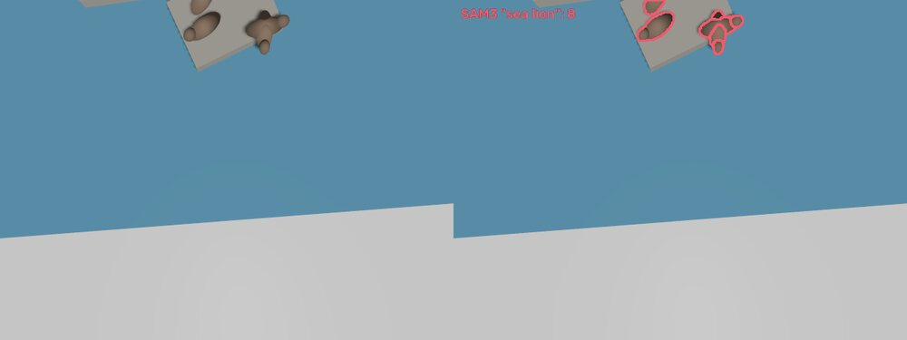
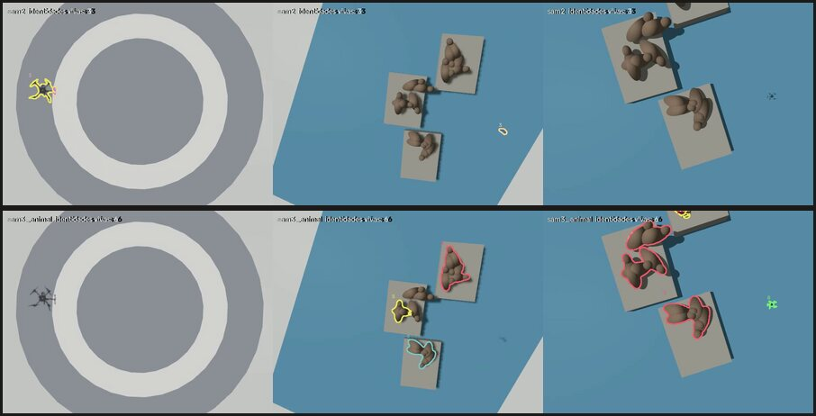

ROS 2 Jazzy · Gazebo Harmonic · PX4 · YOLO26 · SAM 2.1 · SAM 3 · Docker
Un laboratorio de robótica que vive entero en contenedores. Un dron que releva una reserva de lobos marinos, un dataset que se fabrica solo, y dos modelos entrenados con él: uno que cuenta y otro que decide qué vale la pena fotografiar. Al final, esos modelos de pocos megabytes se miden contra los fundacionales de Meta.
Nada se instala en la máquina salvo Docker. El stack completo —ROS 2, el simulador, el autopiloto, el entorno de entrenamiento— vive en imágenes que se levantan por perfiles: se enciende sólo lo que hace falta.
Todo lo que sigue se generó y se ejecutó en una sola computadora de escritorio, con una placa de video de 6 GB.
Física, sensores y render sobre GPU. El mundo donde viven los robots.
El mismo autopiloto que corre en una Pixhawk, volando en simulación. Control offboard desde Python.
El cuadricóptero como problema de control aprendible. Python puro, corre en CPU.
Una misión de juguete con primitivas, para ilustrar la forma de un relevamiento real: despegue del helipuerto, traslado a 26 m, descenso, barrido en zigzag sobre la colonia tomando fotos, regreso y aterrizaje.
Acá está la ventaja que un dataset real no tiene: las etiquetas salen gratis y son exactas. Conocemos las coordenadas 3D de cada animal y los parámetros de la cámara, así que proyectar da la caja en píxeles. Sin etiquetar a mano, sin error humano, y sin ambigüedad cuando dos animales se superponen: sabemos dónde está cada uno aunque el otro lo tape.
En vez de derivar la convención de ejes de la documentación y confiar, se probaron las ocho combinaciones posibles y se eligió la que hace calzar las posiciones proyectadas con los animales que el detector clásico encontraba.
Separación decisiva. El residuo final —10,7 px sobre un animal de 52 px— no es error de proyección: compara el origen del modelo contra el centro del cuerpo visible, y estos animales tienen la cabeza corrida con orientación al azar.

El dron se queda quieto y la escena cambia debajo. Cada iteración: se reubican rocas y animales, se saca una foto y se calculan las etiquetas. Dos segundos por escena.
| Conjunto | Imágenes | Instancias | Mín | Máx | Media |
|---|---|---|---|---|---|
| detección · entrenamiento | 234 | 3439 | 4 | 26 | 14,7 |
| detección · validación | 69 | 1010 | 4 | 26 | 14,6 |
| decisión · con y sin fauna | 313 | — | 0 | 26 | — |
Dos modelos, entrenados con esos datos, resolviendo mitades distintas del problema.
La línea base era visión clásica: umbral de color y watershed. Funciona, pero sólo porque los umbrales se eligieron mirando una escena concreta. Cambia la luz o el fondo y se rompe.
| Error medio | Dentro de ±1 | Exacto | |
|---|---|---|---|
| umbral de color | 3,78 | 19% | 7% |
| YOLO26 entrenado | 1,39 | 57% | 29% |
Y por densidad de colonia, el margen se sostiene: 0,76 contra 3,06 en las escenas ralas; 1,85 contra 4,55 en las más pobladas.

La otra pregunta no es cuántos hay, sino si vale la pena gastar una foto. Es la decisión que tomaría el dron en vuelo, y necesita ser barata: 3,6 ms por cuadro.
El dataset original no servía para esto: todas las imágenes tenían animales, así que un clasificador habría dicho que sí siempre. Hicieron falta negativos, y de dos tipos. Mar abierto es el fácil. El difícil son las rocas peladas: mismo fondo, sin fauna. Sin ellas el modelo aprende «hay roca, hay fauna» y dispararía sobre cada piedra.

La ruta visita dos sitios: una colonia con doce animales y un señuelo —las mismas rocas, sin fauna—. Si toda la ruta pasara sobre animales, un modelo que dijera que sí siempre parecería perfecto.
La verdad de campo no se etiqueta: se calcula. Conocemos la ruta, la posición de cada animal y el campo de visión, así que se puede reconstruir para cada instante si había fauna en el encuadre.
| Tramo | Cuadros | Debía | Capturó | Acierto |
|---|---|---|---|---|
| Despegue | 15 | 0 | 2 | 87% |
| Traslado | 29 | 10 | 8 | 93% |
| Sobre la colonia | 25 | 25 | 25 | 100% |
| Entre sitios | 13 | 13 | 13 | 100% |
| Sobre el señuelo | 25 | 2 | 7 | 72% |
| Regreso | 34 | 0 | 0 | 100% |
| Aproximación | 14 | 0 | 0 | 100% |
93% de decisiones correctas. Tres capturas perdidas contra ocho de más, y esa asimetría es la buena: perder un dato es grave, gastar una foto es barato.
Al abrir las siete «de más» sobre el señuelo, resultó que el modelo tenía razón: son consecutivas al inicio del tramo, el señuelo entra por arriba y la colonia todavía se ve abajo. La medición era más estricta que la realidad, no al revés.
El dron volvió con 54 fotos. El detector las cuenta: la mejor toma da 17 animales contra 12 reales.

El error es honesto y vale la pena mirarlo: en su propio conjunto de validación el modelo tiene sesgo negativo (−0,26), no sobrecuenta. El +5 aparece fuera de distribución, con el dron a otra altura y otro encuadre, y toma la forma de cajas repetidas sobre un mismo cuerpo.
La causa está en cómo se etiquetó: cuadrados de tamaño fijo centrados en cada animal. Dos animales cercanos generan cajas que se solapan mucho, y el modelo aprendió que ese solapamiento es legítimo. Subir el umbral de supresión no lo arregla —YOLO26 hace inferencia sin supresión no-máxima, así que las duplicadas no son un fallo de filtrado sino predicciones genuinas—. El arreglo de fondo es regenerar las etiquetas con cajas ajustadas a la orientación de cada cuerpo.
Los dos modelos anteriores se fabricaron acá. La pregunta siguiente es qué hace un modelo fundacional —entrenado con millones de fotografías reales, sin haber visto jamás una imagen de este laboratorio— al que se le puede pedir lo que uno busca simplemente escribiéndolo.
Se probaron dos, en paralelo, sin descartar ninguno: SAM 2.1 (88 MB, hay que señalarle qué segmentar) y SAM 3 (3,4 GB, 840 M parámetros, recibe una frase en inglés). El acceso a SAM 3 está bajo licencia de Meta; se solicitó y se aprobó durante este trabajo.
Primera sorpresa, y la más instructiva de todo el ejercicio. Sobre las 69 imágenes de validación —1010 animales, 14,6 por imagen— la frase «sea lion» encuentra cero. No pocos: ninguno. Su error absoluto medio es 14,64, que es exactamente la cantidad media de animales por imagen: el modelo siempre responde «no hay nada».
| Frase | u=0,5 | u=0,3 | u=0,15 | u=0,08 |
|---|---|---|---|---|
| «sea lion» | 14,64 | 14,64 | 14,57 | 14,35 |
| «seal» | 14,64 | 14,64 | 14,62 | 14,17 |
| «animal» | 13,00 | 9,58 | 7,68 | 16,30 |
| «brown animal» | 12,88 | 8,30 | 7,58 | 20,61 |
Error absoluto medio de conteo según la frase y el umbral de confianza. El modelo sí ve los animales —con «animal» los encuentra— pero no los reconoce como lobos marinos. Y no es que devuelva cualquier cosa: preguntándole por «rock» o por «water», sobre la misma imagen llena de piedra y de agua, devuelve cero. Discrimina; simplemente nuestros elipsoides marrones no son, para él, lobos.

El resultado se lee de un vistazo: un modelo de 5,1 MB entrenado con las 234 imágenes que fabricó este mismo laboratorio le gana 5,5 veces a uno fundacional de 3,4 GB. No porque sea mejor modelo, sino porque vio este dominio y el otro no.
La primera hipótesis fue el tamaño. Los animales ocupan unos 25 píxeles y SAM 3 se entrenó con fotografías grandes. Se repitió todo ampliando las imágenes 2× y 3×: el error no mejoró, y «sea lion» siguió dando exactamente cero a las tres escalas. Interpolar no agrega información.
Lo que sí la agrega es volar más bajo. En 7 de las 56 fotos que trajo la misión autónoma —justo las del tramo en que el dron pasa cerca y oblicuo— la frase «sea lion» sí encuentra animales.

Quedaba una idea por probar: en vez de fotos sueltas, correr el conteo sobre el video de una misión entera. La ventaja es la identidad persistente: un censo no pregunta «cuántos entran en este encuadre» sino «cuántos animales distintos vio el dron en todo el vuelo».
Se probaron las dos variantes sobre 120 cuadros del vuelo de censo. SAM 2.1 no sabe qué es un lobo, así que se lo siembra YOLO26 y él propaga con memoria; SAM 3 recibe la frase y resuelve detección e identidad por su cuenta.
| Rastreo sobre video | Identidades | Verdad | Error | VRAM |
|---|---|---|---|---|
| SAM 2.1 + semilla YOLO26 | 19 | 14 | +5 | 3,91 GB |
| SAM 3 · «animal» | 6 | 14 | −8 | 3,69 GB |

Los dos fallan, y por motivos opuestos que valen más que el número: SAM 2.1 hereda el sobreconteo del detector que lo sembró, y SAM 3 fusiona grupos vecinos en un solo objeto. Pero hay un fallo más profundo, común a los dos, y es el que hace interesante el experimento: el seguimiento con memoria asume que el objeto se queda en cuadro. Un vuelo de relevamiento hace lo contrario: pasa una vez sobre cada animal y sigue de largo. Por eso el censo bueno no sale del video sino de georreferenciar —proyectar cada detección a coordenadas del mundo y fusionar allá, donde el animal no se mueve aunque la cámara sí.
El primer intento sembró SAM 2.1 en «el primer cuadro con al menos tres detecciones». Ese cuadro resultó ser el helipuerto: YOLO26 encontró diez animales en los anillos concéntricos de cemento, y SAM 2.1 se pasó el vuelo persiguiendo manchas. Siete de las diez pistas murieron en un solo cuadro.
El error era del diseño del experimento, no del rastreador —se corrigió sembrando en el cuadro de máxima detección—, pero dejó a la vista algo real: un detector entrenado únicamente con escenas de reserva no tiene ninguna noción de qué no es un lobo. En los 18 cuadros siguientes al helipuerto no detecta nada; el pico es aislado y delator.
Sobre las 56 fotos que la misión autónoma decidió sacar por su cuenta, con el mismo criterio que se usó para YOLO —el censo es el pico, la foto donde más colonia entra en el encuadre—:
| Método | Pico | Real | Error | Media/foto | Fotos con algo |
|---|---|---|---|---|---|
| YOLO26n (entrenado acá) | 17 | 12 | +5 | 9,0 | 54 |
| SAM 2.1 (zero-shot) | 13 | 12 | +1 | 4,3 | 51 |
| SAM 3 · «brown animal» | 29 | 12 | +17 | 15,5 | 55 |
| SAM 3 · «sea lion» | 8 | 12 | −4 | 0,6 | 7 |
Acá SAM 2.1 parece ganar, y conviene no creerle. El criterio del pico premia a quien subcuenta con moderación: SAM 2.1 promedia 4,3 animales por foto —muy por debajo de la verdad— y su máximo cae cerca de 12 por aritmética, no por acierto. En su propio conjunto de validación su error es 6,52 contra 1,39 de YOLO26. Un estimador que acierta el total equivocándose en cada foto no es un buen estimador; es una casualidad con suerte.
El dato honesto de esta tabla es otro: la correlación foto a foto entre YOLO26 y SAM 3 es 0,83. Coinciden bastante en dónde hay animales; discrepan en cuántos. Eso sugiere que el modelo fundacional serviría como detector de zonas de interés —«acá hay algo»— y el modelo entrenado acá como contador.
Hallazgos que no estaban en ninguna documentación y que costaron reinicios forzados y vuelos fallidos. Van acá porque son la parte más transferible del trabajo.
No era falta de memoria: con swap disponible el kernel prefería paginar, y el escritorio quedaba inutilizable sin que nada muriera. systemd-oomd está activo pero no vigila los contenedores de Docker.
El arreglo de fondo son techos de memoria por contenedor con el swap prohibido: convierte un cuelgue de la máquina en la muerte de un proceso.
La reserva está 26 m al este. Pedirle x=26 al autopiloto lo manda 26 m al norte. El dron volaba perfecto, fotografiaba perfecto, y las imágenes salían del lugar equivocado.
Los paquetes ROS compilados están enlazados contra una versión concreta de numpy. Instalar torch al lado la reemplaza y rompe la ABI. Los modelos se entrenan en un contenedor con GPU y se ejecutan en el de ROS exportados a ONNX — que es además lo que uno haría para llevarlos a una computadora de a bordo.
Catorce animales de una escena anterior quedaron en el mundo, sin etiqueta, contaminando cada imagen del dataset — eso le enseña al modelo que un lobo marino es fondo, y sólo se ve dibujando las cajas encima. Un helipuerto con colisión sobre el punto donde nace el dron: armaba, entraba en modo offboard, recibía órdenes y no se movía, sin un mensaje de error. Un servicio que devolvía «éxito» sin crear nada.